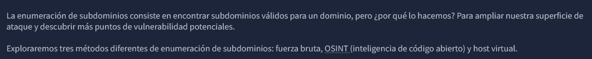
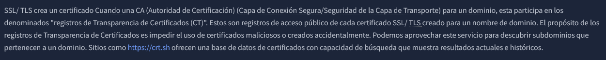
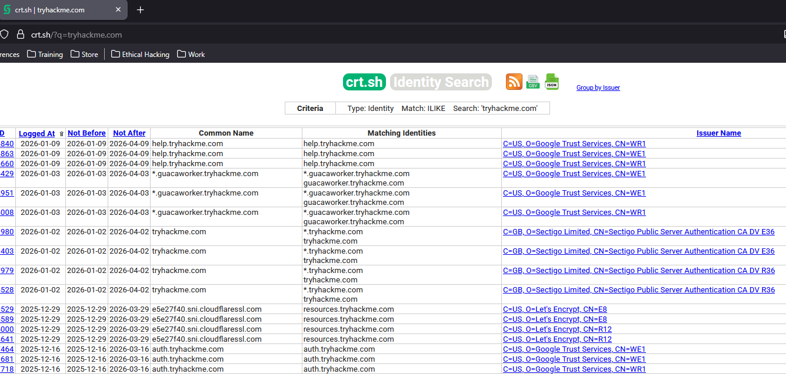
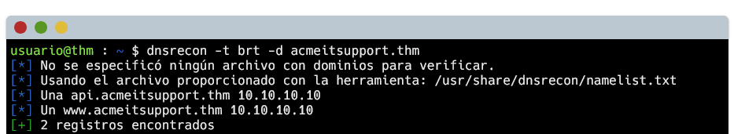
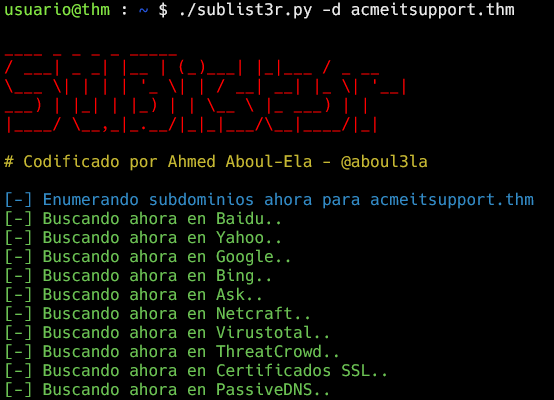
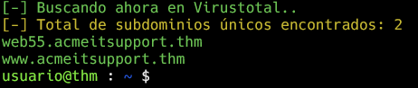
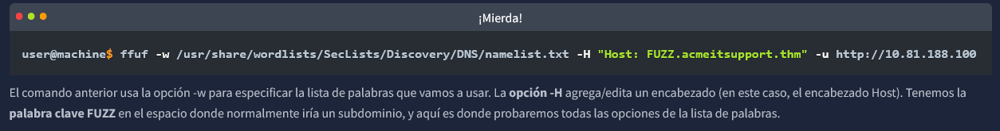
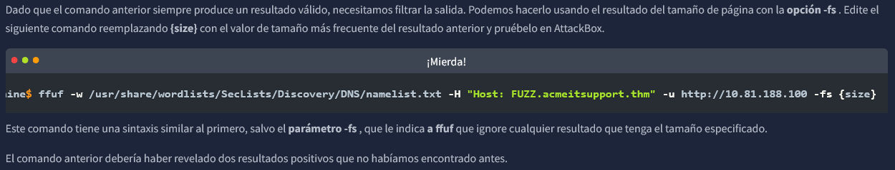

Enumeracion de subdominios - DNS PUBLICO

Certificados SSL/TLS

Se pueden encontrar subdominios de cualquier sitio web a travez del portal https://crt.sh (RECONOCIMIENTO PASIVO)

OSINT Enumeracion por fuerza bruta (RECONOCIMIENTO ACTIVO)
(Sistema de Nombres de Dominio) por fuerza bruta La enumeración de DNS consiste en probar decenas, cientos, miles o incluso millones de subdominios posibles de una lista predefinida de subdominios de uso común. Dado que este método requiere muchas solicitudes, lo automatizamos con herramientas para agilizar el proceso. En este caso, utilizamos la herramienta dnsrecon

OSINT Sublist3r (RECONOCIMIENTO ACTIVO)
Para acelerar el proceso de descubrimiento de subdominios OSINT , podemos automatizar los métodos anteriores con la ayuda de herramientas como Sublist3r


Enumeracion de subdominios - DNS PRIVADO
Algunos subdominios no siempre se alojan en resultados DNS de acceso público , como las versiones de desarrollo de una aplicación web o los portales de administración. En su lugar, el registro DNS podría guardarse en un servidor DNS privado o en las máquinas del desarrollador, en su archivo /etc/hosts (o en c:\windows\system32\drivers\etc\hosts para usuarios de Windows), que asigna nombres de dominio a direcciones IP.
Dado que los servidores web pueden alojar varios sitios web desde un mismo servidor cuando un cliente solicita un sitio web, el servidor sabe qué sitio web busca el cliente a partir del encabezado Host. Podemos utilizar este encabezado host modificándolo y monitoreando la respuesta para ver si hemos descubierto un nuevo sitio web.
Al igual que con DNS Bruteforce, podemos automatizar este proceso utilizando una lista de palabras de subdominios comúnmente utilizados.
NOTA: -fs 2395 indica que no traiga sitios genericos, es decir que se va a obtener subdominios mas reales

